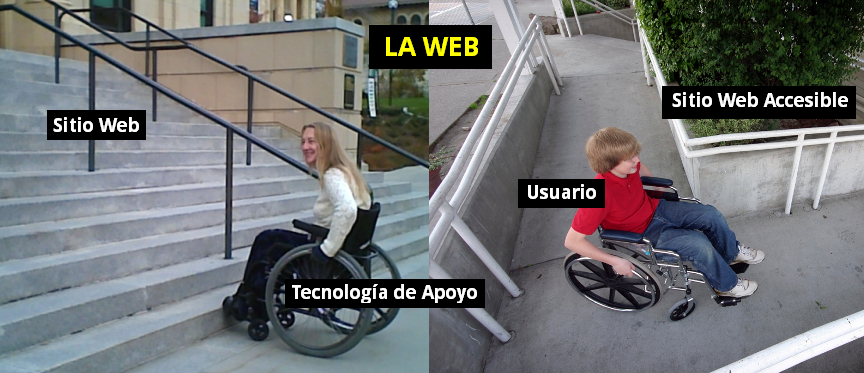
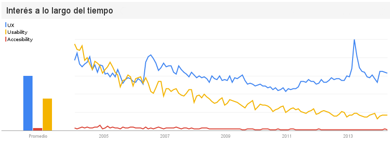
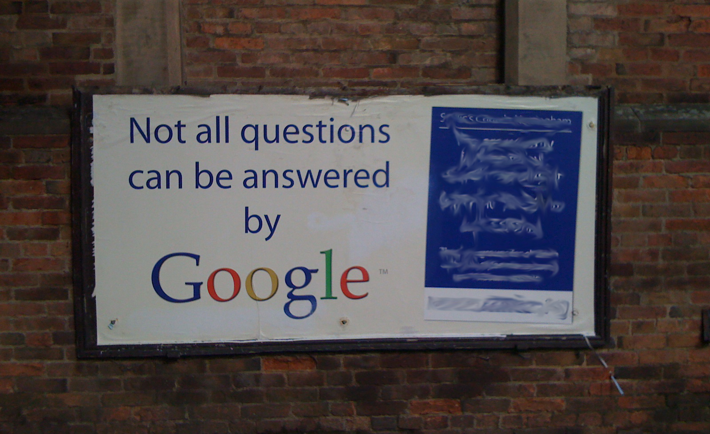

Drupal inclusivo
Un CMS diseñado con accesibilidad
Drupal Meetup Rosario 2017
Pablo Botta
Algunos detalles para que me conozcan un poco mejor...
- Ingeniero en Sistemas de la UTN 2012
- Desarrollador Web y Drupal (desde el 2008)
- Colaborador en A11y Project
Accesibilidad Web
(de manual)
La accesibilidad Web significa que personas con algún tipo de discapacidad van a poder hacer uso de la Web. En concreto, al hablar de accesibilidad Web se está haciendo referencia a un diseño Web que va a permitir que estas personas puedan percibir, entender, navegar e interactuar con la Web, aportando a su vez contenidos a la misma.
Analogía para entender la
accesibilidad Web

En nuestro entorno cotidiano (la web) y a pesar de que las personas (usuarios) cuenten con herramientas, tales como una silla de ruedas, para disminuir sus dificultades (tecnologías de apoyo, por ejemplo un lector de pantalla) existen lugares públicos o privados (sitios web) que NO tienen las condiciones para recibirlos (Accesibilidad Web).
Discapacidad en números
(no es algo marginal)
Aproximadamente el 15% de la personas en el mundo están afectadas por algún tipo de discapacidad. (13 veces la población Argentina)
En Argentina aproximadamente el 12.7% de la población sufre de algún tipo de discapacidad (5 millones de personas). En 2003 el valor era del 8% se estima a que se debe por el envejecimiento de la población.
Fuente: World Report on Disability 2011 - OMS
Fuente: Censo Nacional de Población, Hogares y Viviendas 2010. INDEC
Drupal accesible
A través de la iniciativa de Accesibilidad, Drupal y su comunidad se encuentran comprometidos en asegurar en que el core de Drupal cumpla con las guías de la World Wide Web Consortium (W3C):
WCAG 2.0: Principios
Situaciones que generan que cierto grupo de personas no puedan acceder a un determinado contenido.
- Perceptibilidad - La información y los componentes de la interfaz de usuario deben presentarse a los usuarios de la manera en que puedan percibirlos.
- Operabilidad - Los componentes de la interfaz de usuario y la navegación deben ser operables.
- Comprensibilidad - La información y el manejo de la interfaz de usuario deben ser comprensibles.
- Robustez - El contenido debe ser lo suficientemente robusto como para confiarse en su interpretación por parte de una amplia variedad de agentes de usuario, incluidas las tecnologías asistivas.
Barreras de accesibilidad
HTML correcto y semnático
- Personas accediendo a la Web con medios no tradicionales (distintos a los navegadores) encuentra obstáculos para acceder a la información.
- Personas esperando un determinado comportamiento de la Web se encuentran con uno diferente.
-
Lo que es en realidad (por ejemplo un
button) no es lo que se dijo (div).
Alternativas textuales a elementos
visuales
- Personas con discapacidad visual no pueden acceder al contenido no textual
- Toda información transmitida por una imagen, video o cualquier otro elemento visual debería tener una alternativa textual
- No todo se resuelve incluyendo el atributo
alt
Accesible por teclado
- Personas con imposibilidad de utilizar un mouse no pueden acceder al contenido diseñado para ser accedido únicamente por ese dispositivo.
- Toda acción que pueda realizarse mediante el mouse debería poder efectuarse utilizando el teclado u otro dispositivo o medio.
-
No todo se resuelve utilizando el atributo
accesskey - Las atajos de teclado no están debidamente señalizados.
Contraste de colores y texto legible
- Personas con moderada o baja visión y personas con algún grado de daltonismo pueden encontrar dificultad en leer texto con bajo contraste.
- Personas con dificultades cognitivas, del lenguaje o de aprendizaje pueden no percibir el texto y/o perder el foco de lectura si el texto es presentado de una manera que sea compleja de leer.
- Personas con dificultades en la visión o en la comprensión de texto pueden enfrentar problemas en mantener el foco y seguir el flujo de largas líneas de texto o si es necesario realizar scroll horizontal para poder continuar leyendo el texto presentado en pantalla.
Drupal accessibility team
Drupal 8 tiene muchas mejoras tanto en la parte de acceso de los usuarios como administradores en cuanto accesbilidad
- Presentación y operatividad de la búsqueda
- Funcionalidad Drag & Drop
- Contraste e intensidad de los colores
- Agregar links de navegación a los temas bases
- Manejo de imágenes
- Etiquetado de campos de formularios
Fuente: Accessible Features in Drupal
#D8AX - Drupal 8 Accessibility eXperienc
Los desarrolladores se comprometen a hacer una evaluación básica de su módulo o tema; solucionar problemas de accesibilidad etiquetados con accesibilidad o D8AX; pidiendo ayuda para construir mejoras de accesibilidad para el desarrollo futuro; y respondiendo a los problemas de accesibilidad cuando se archivan. Los desarrolladores deben considerar la experiencia del usuario de los administradores, creadores de contenido y visitantes del sitio.
Veamos algunos ejemplos
Entonces, Drupal es accesible por defecto, como desarrolladores debemos cuidarnos de no romper dicha accesibilidad.
No solo es responsabilidad de los desarrolladores sino también de los creadores de contenido.
¿Por qué no se desarrolla accesible?
(Opinión Personal)
La accesibilidad Web NO es una tendencia
Existe la creencia entre los desarrolladores y los dueños de negocio que no existe público beneficiado por la Accesibilidad Web, además que no es tema de gran debate.
Fuente: Google Trends, Net Market Share y Stats Counter
Entnces, ¿por qué debería tenerla en cuenta?

Imagen cortesía de Tsahi Levent-Levi
Sus beneficios son para TODOS
Los principios de la accesibilidad forman parte de la Usabilidad y la Experiencia del Usuario.
Su implementación en sitios Web beneficia a todas las personas y no solo a aquellas que tienen un algún tipo de dificultad.
"Discapacitados temporales"

Las estadísticas anteriores no tienen en cuenta que todos podemos quedar temporalmente disminuidos, siendo entonces el número de personas afectadas, en un período de tiempo, aún mayor.
Imagen cortesía de Cameron Parkins
Otros grupos beneficiados directamente
- Personas mayores
- Personas que carezcan de estudios o que no sean nativas en la lengua del sitio Web
- Personas con conexiones lentas o que utilizan tecnologías desactualizadas
- Nuevos usuarios o usuarios infrecuentes del sitio
Fuente: Web Accessibility Web Standards and Regulatory Compliance
Mitos sobre Accesiblidad Web
- MITO: Es incompatible con JavaScript. Sin embargo, por ejemplo el 98% de personas que navegan utilizando un lector de pantalla, tienen JavaScript activado [fuente].
- MITO: Convierte a los sitios web en feos y aburridos. Sin embargo, con el mismo código HTML se pueden hacer maravillas de diseños solo con CSS [ejemplos en Zen Garden]. Únicamente hay que evitar introducir barreras con nuestro CSS.
- MITO: Requiere mucho más tiempo. Pero si se incluye dentro del proceso de desarollo no debería aumentar el costo de las soluciones.
- MITO: No aporta ningún beneficio extra. Mejora la usabilidad y las conversiones de nuestro sitio al mismo tiempo que los tiempos de carga y el SEO.
Herramientas
-
Validadores de pautas de accesibilidad
-
Lectores de pantallas
-
Otros
Autoevaluación
¿Es el sitio accesible mediante teclado? ¿El focus de los elementos es el esperado? ¿Los atajos del teclado son facilmente predecibles?
¿Es el contenido comprensinble sin imágenes?
¿Necesito tener activado el sonido para poder usar el sitio?
¿El sitio se visualiza correctamente en modo de alto contraste? ¿Existe el contraste suficiente entre los colores de fondo y de fuentes? ¿Necesito distinguir colores para usar el sitio?
Preguntas
Cortesía de Jay Gooby
Gracias
Accesibilidad es pensar en todos
Contacto